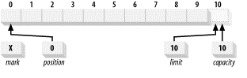

=简介= 日期: 2012-10-22 19:07
这四个属性之间总是遵循以下关系：

isReadOnly来判定是否可写
package java.nio;
public abstract class Buffer {
public final int capacity( )
public final int position( )
public final Buffer position (int newPositio
public final int limit( )
public final Buffer limit (int newLimit)
public final Buffer mark( )
public final Buffer reset( )
public final Buffer clear( )
public final Buffer flip( )
public final Buffer rewind( )
public final int remaining( )
public final boolean hasRemaining( )
public abstract boolean isReadOnly( );
}
get()
get(index)
put(x)
put(index, x)
hasRemaining() 检查`postion 就否到达limit`
remaining() 返回postion到达limit距离
clear() 重置buffer, postion设为0, limit设为capacity
position指向剩余数据的长度
limit指向compacity
compact后
mark()为当前`postion`指定一个标记
reset()可以使`position`回到标记的地方
reset(), 若标记未定义，抛异常
rewind()
clear()
flip()
limit(index), 如果index小于标记
position(index, 如果index小于标记
equals() :
compareTo() :
public abstract class CharBuffer extends Buffer implements CharSequence, Comparable {
// This is a partial API listing
public CharBuffer get (char [] dst)
public CharBuffer get (char [] dst, int offset, int length)
public final CharBuffer put (char[] src)
public CharBuffer put (char [] src, int offset, int length)
public CharBuffer put (CharBuffer src)
public final CharBuffer put (String src)
public CharBuffer put (String src, int start, int end)
}
ByteBuffer, CharBuffer, IntBuffer, ShortBuffer, LongBuffer, FloatBuffer, DoubleBuffer
public abstract class CharBuffer extends Buffer implements CharSequence, Comparable{
// This is a partial API listing
public static CharBuffer allocate (int capacity)
public static CharBuffer wrap (char [] array)
public static CharBuffer wrap (char [] array, int offset, int length)
public final boolean hasArray( )
public final char [] array( )
public final int arrayOffset( )
}
CharBuffer charbuffer = CharBuffer.wrap (myArray, 12, 42);
hasArray()返回buffer是否有一一个备份数组
public abstract class CharBuffer extends Buffer implements CharSequence, Comparable {
// This is a partial API listing
public abstract CharBuffer duplicate( );
public abstract CharBuffer asReadOnlyBuffer( );
public abstract CharBuffer slice( );
}
package java.nio;
public final class ByteOrder {
public static final ByteOrder BIG_ENDIAN
public static final ByteOrder LITTLE_ENDIAN
public static ByteOrder nativeOrder( ) //返回硬件平台的字节顺序
public String toString( )
}
public abstract class ByteBuffer extends Buffer implements Comparable {
// This is a partial API listing
public static ByteBuffer allocate (int capacity)
public static ByteBuffer allocateDirect (int capacity)
public abstract boolean isDirect( ); }
public abstract class ByteBuffer extends Buffer implements Comparable {
// This is a partial API listing
public abstract CharBuffer asCharBuffer( );
public abstract ShortBuffer asShortBuffer( );
public abstract IntBuffer asIntBuffer( );
public abstract LongBuffer asLongBuffer( );
public abstract FloatBuffer asFloatBuffer( );
public abstract DoubleBuffer asDoubleBuffer( );
}